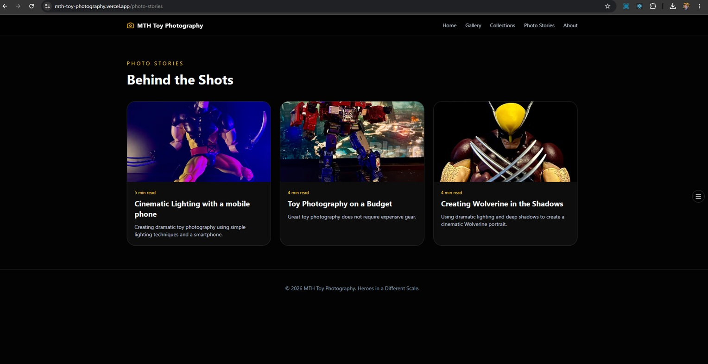

Creative Content Presentation
This project demonstrates my ability to create a visual brand experience, organize creative content, write photo story sections, and present images in a clean responsive website.
Creative Portfolio & Content Creation
A personal photography portfolio showcasing cinematic toy photography, creative storytelling, and modern responsive web design.
Case Study
Modern dark theme, clean image presentation, simple navigation, strong visual hierarchy, and mobile-friendly creative content browsing.
Next.js, TypeScript, Tailwind CSS, responsive web design, Vercel deployment, photography, Photoshop editing, content creation, and AI-assisted development.
Project Value

This project demonstrates my ability to create a visual brand experience, organize creative content, write photo story sections, and present images in a clean responsive website.
More Projects